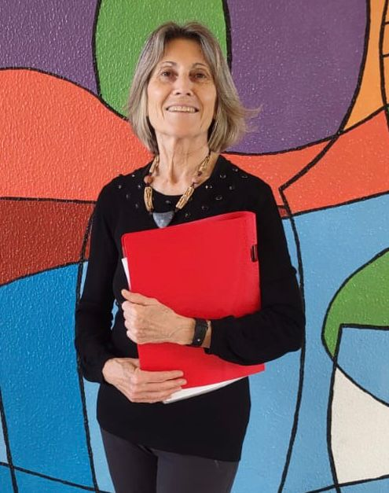
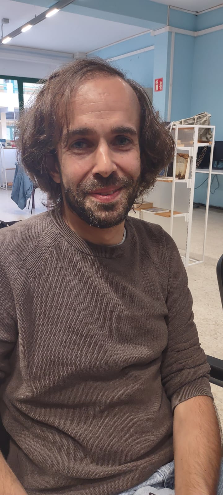
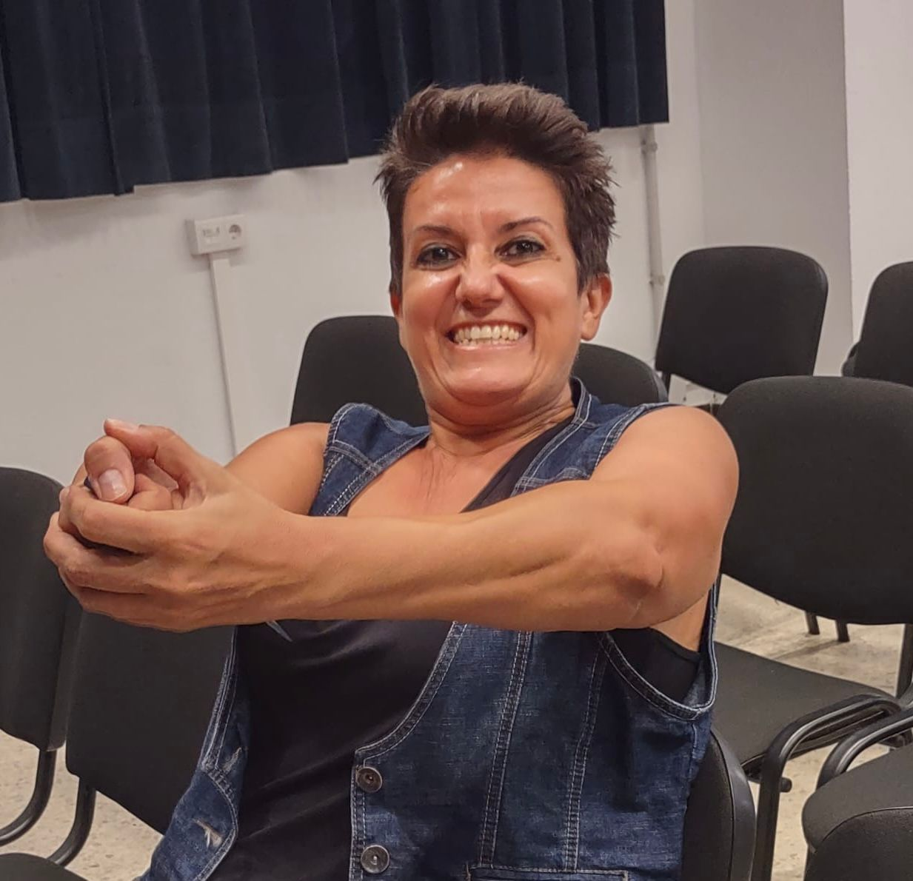

Directivo

Nicoletta Cristina Pennati
PresidentaNicoletta Cristina Pennati, nacida en Milán (Italia), reside en Las Palmas de Gran Canaria. Licenciada en Ciencias Políticas, se convirtió en periodista profesional en 1981. Pasó los últimos veinte años de su carrera trabajando para el semanario Io donna del Corriere della Sera, el principal diario de Italia. Tiene un máster en NLP.
Ha escrito cuatro libros, entre ellos el best seller Prevenir el cáncer comiendo con gusto, varios guiones teatrales, entre ellos: ¡Buen Camino! El Camino de Santiago entre volcanes, La librería de las Almas y La Confraternidad de la Sardina, que se está preparando. Ha participado como voluntaria en el proyecto Teatro en la cárcel en el Centro Penitenciario Salto del Negro de Las Palmas con la Asociación Hestia.
Ha ideado el Proyecto TeHospeCan, teatro en los Hospitales de Canarias con lo cual, por primera vez el teatro aficionado entra con regularidad, en los 14 hospitales públicos de las islas Canarias; el Proyecto TeTera (Teatro Terapia), desarrollado en los 4 distrito de Las Palmas de Gran Canaria en colaboración con la concejalía de Servicios Sociales del Ayuntamiento y el Proyecto Todos somos uno (teatro inclusivo) donde algunos de los actores tienen discapacidad motriz. Forma parte del grupo de escritores de Canaria escribe teatro.

Walter Sainz-Rozas Schmitz
SecretarioWalter Sainz-Rozas Schmitz: Soy un joven nacido a dos pasos del Atlántico. Más adelante me hice con un título de Historia y un Diploma de Estudios Avanzados. Tras 11 años intentando que los jóvenes se interesaran por su pasado y presente, la vida me regaló un giro de guion inesperado en forma de enfermedad rara y degenerativa. Fue entonces cuando descubrí que la "inclusividad" oficial tiene mucho de decorado de cartón piedra y bastante poco fondo.
Cansado de tanta pantomima, decidí cambiar de escenario y me planté en Anda que Anda. Me metí en este lío porque, como cinéfilo y letraherido incurable, necesitaba un lugar donde mi silla de ruedas no fuera un "pero", sino una parte fundamental de una historia que merece ser contada. Aquí lo mismo me ves dándolo todo sobre las tablas en alguna actuación esporádica, que peleándome con la gestión de proyectos para que esta maquinaria no deje de rodar.
Al final, sigo siendo esa persona inquieta que viaja por el mundo y devora cultura.
Encarna Alemán Ramirez
Tesorera(Biografía a completar)
Ruth Plata León
Vocal(Biografía a completar)

Ángela De Prisco
Vocal(Biografía a completar)
Belinda Maria Hernández García
Vocal(Biografía a completar)